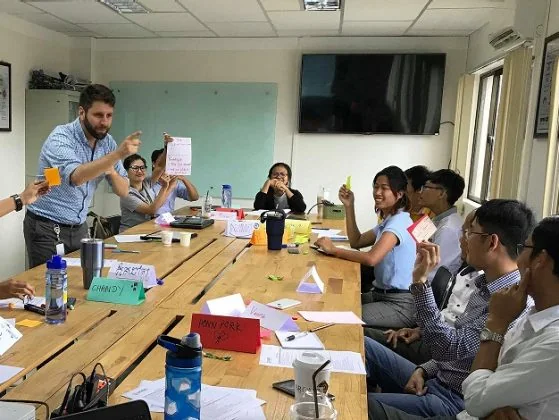
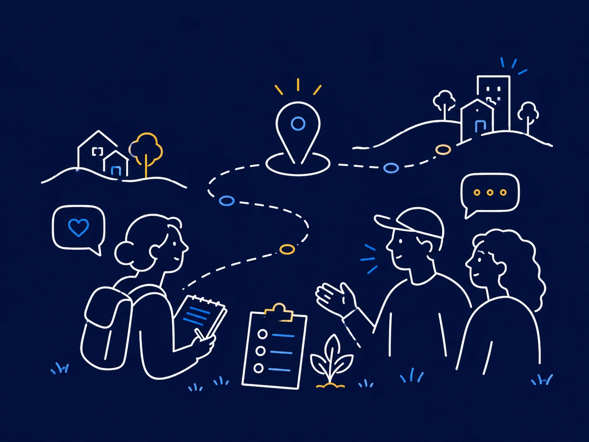

Civic capacity for a changing world
Helping civic voices renew democracy in the AI age.
New Democracy Studio develops practical programs that help civic actors build capacity, strengthen their influence, and navigate a rapidly changing technological and information environment.
Why now
The stakes are bigger than productivity.
Democracy and human-rights organizations are being asked to do more with fewer resources, while the information environment around them grows faster, more fragmented, and more technologically sophisticated.
Authoritarian actors are already using AI and digital systems to scale surveillance, censorship, disinformation, and political influence. Democratic organizations should not imitate those tactics—but they cannot afford to ignore the capabilities behind them.
Civic organizations have a different advantage: credible ideas, trusted relationships, strong communities, and values that connect with people. New technologies can help those voices work faster, reach further, coordinate better, and build public support.

Reduce repetitive work and create more space for mission-critical thinking and relationships.
Strengthen communications, understand audiences, advance narratives, and advocate more effectively.
Use technology to listen, engage, coordinate, and deepen human connection.
Find opportunities, strengthen proposals, and build more resilient sources of support.
Current programs
Built around the capabilities civic actors need now.
New Democracy Studio is designed as a platform for practical programs, cohorts, training, community, and future forms of support. The September session below is one current offering—not the limit of what the Studio will become.
AI Productivity Without Sacrificing Privacy
A practical session for democracy and human-rights professionals who want to use today’s AI tools more efficiently while protecting sensitive organizational information, sources, partners, and people.
20 seats. Request to join.
The Studio is built to support new cohorts, communications and influence programs, community-building initiatives, technology support, partnerships, and other forms of democratic capacity building.
How we work
Practical. Human-centered. Thoughtful.
The technology changes. The method is consistent: start with real work, understand the people and context, and use tools in ways that genuinely improve outcomes.

Start with real problems and useful applications, not technology for its own sake.
Technology should strengthen people’s capabilities, judgment, and relationships.
Understand tradeoffs, protect people and information, and use technology proportionately.
Custom training
Bring New Democracy Studio to your organization.
Programs are tailored around the work your team actually does—from AI adoption and strategic communications to research, fundraising, data, visualization, and technology-enabled workflows.
Focused sessions built around a specific team need or workflow.
Deeper skill-building, practice, implementation, and team support.
Customized programs that build capacity across groups of grantee organizations.


Technology adoption, grounded in civic practice
Two decades helping civic actors make technology useful.
Adam Fivenson has spent two decades helping civil society organizations, journalists, governments, and development practitioners do their work better, faster and easier using technology.
His work spans AI adoption, strategic communications, data and visualization, civic technology, and human-centered design. He has designed and delivered programs across the United States, Europe, Latin America, Africa, and Asia.
Most recently, Adam led AI training programs at Climate Collective, designing curricula and overseeing six practitioner cohorts. He also taught Lean Human-Centered Design for international development at Georgetown University’s School of Foreign Service for two years.
Start with the work people need to do. Find the technology that genuinely helps. Keep human judgment, relationships, and values at the center.
From the field
Different technologies. Different contexts. Same starting point: people, purpose, and practice.




The broader vision
Training is one part of a larger platform for civic capacity.
New Democracy Studio is being built to support civic actors with practical expertise, technology, community, partnerships, and new resources as the needs of democratic civil society evolve.
FAQ
A few useful answers.
Who are New Democracy Studio programs for?
Programs are designed primarily for people working in democracy, human rights, journalism, research, advocacy, fundraising, foundations, and adjacent civic fields.
Do I need technical experience?
No. Programs are designed around practical work and can be adapted for participants ranging from AI newcomers to experienced users.
Can you train an entire organization?
Yes. New Democracy Studio designs single workshops and multi-session programs around the needs, tools, and workflows of specific teams.
Can foundations sponsor programs for grantees?
Yes. Cohorts of grantee organizations can be designed around shared needs while still giving participants room to build use cases relevant to their own work.
Do you work outside the United States?
Yes. The Studio is international in outlook and experience. Current public programming is in English, with Spanish-language programming also possible.
Work with us
Let’s build useful capacity for civic work.
Ask about a program, organizational training, a foundation-sponsored cohort, or a potential collaboration.